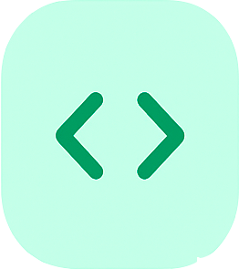

Como Funciona?
Nossa plataforma com tecnologia de IA torna a refatoração de código simples e eficiente. Siga estes quatro passos fáceis para transformar seu código legado.
Envie Seu Código
Cole ou envie seu código legado em qualquer linguagem compatível. Nossa plataforma aceita arquivos ou inserção direta de código.
Análise por IA
Nossa IA avançada analisa a estrutura do seu código, identifica padrões e compreende a lógica e a intenção por trás de cada linha.

Refatoração Inteligente
A IA refatora seu código aprimorando a estrutura, removendo code smells e aplicando design patterns, enquanto preserva toda a funcionalidade.
O Que é Melhorado?
- 1. Preserva a funcionalidade original
- 2. Melhora a legibilidade do código
- 3. Adiciona definições de tipo adequadas
- 4. Remove "code smells"
- 5. Aplica as melhores práticas modernas
- 6. Otimiza o desempenho
- 7. Atualiza APIs obsoletas
- 8. Aumenta a manutenibilidade
A Tecnologia por Trás
Modelos de IA Avançados
Utilizamos modelos de linguagem de última geração, treinados em milhões de repositórios de código. Nossa IA compreende contexto, padrões e melhores práticas em diversas linguagens de programação.
Aprendizado Contínuo
Nossos modelos são continuamente atualizados com os padrões e design patterns mais recentes da programação. Isso garante que o código refatorado siga as melhores práticas atuais do setor.
Segurança em Primeiro Lugar
Cada refatoração é validada para garantir que a funcionalidade seja preservada. Analisamos o comportamento do código e mantemos a equivalência lógica durante todo o processo.
Desempenho Otimizado
Nossa infraestrutura processa o código de forma rápida e eficiente, entregando resultados em segundos sem comprometer os mais altos padrões de qualidade.